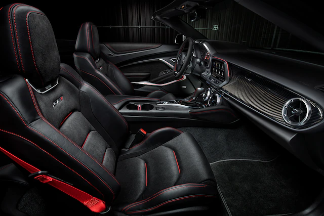
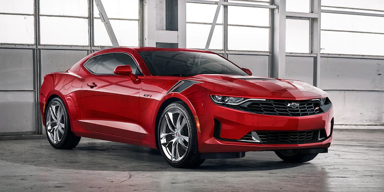

DISEÑOEl inconfundible estilo del Camaro está remarcado con una parrilla grande y baja, que enfría y reduce la resistencia para un desempeño aerodinámico, y sus detalles distintivos llamarán la atención en cualquier calle. | |
INTERIORCada detalle, desde los instrumentos precisos a la sensación de la palanca de cambios al tacto, crea una experiencia de manejo única. Entre las opciones disponibles, se incluye: Asientos delanteros con calefacción y ventilación, Asientos deportivos RECARO®, Asientos con mecanismo eléctrico y paquete Memory, Cinturones de seguridad en Rojo, Volante con calefacción, Volante y palanca de cambios en microfibra gamuzada, Pedales de aluminio. |
|
DISEÑO FRONTALRines forjados pulidos, Emblema de Camaro en el paragolpes, Tapas centrales para rines de Camaro, Franjas de marcas hash color Negro Metálico, Alfombrillas Camaro con bordes en Plata. |